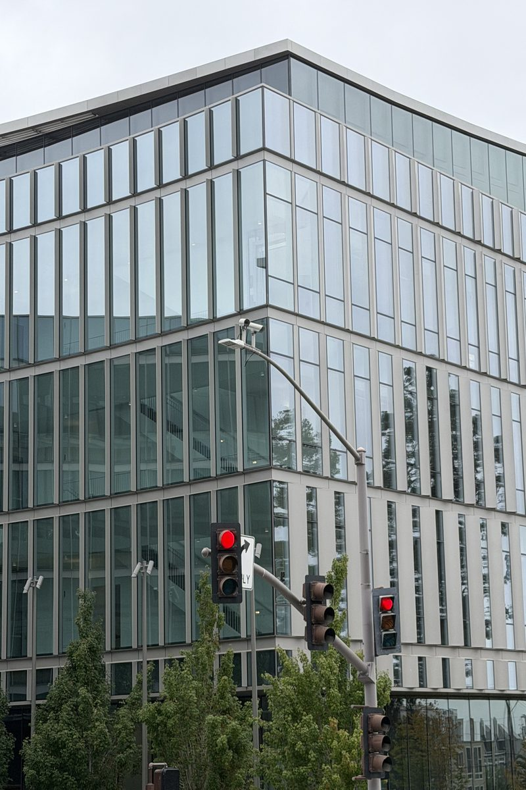
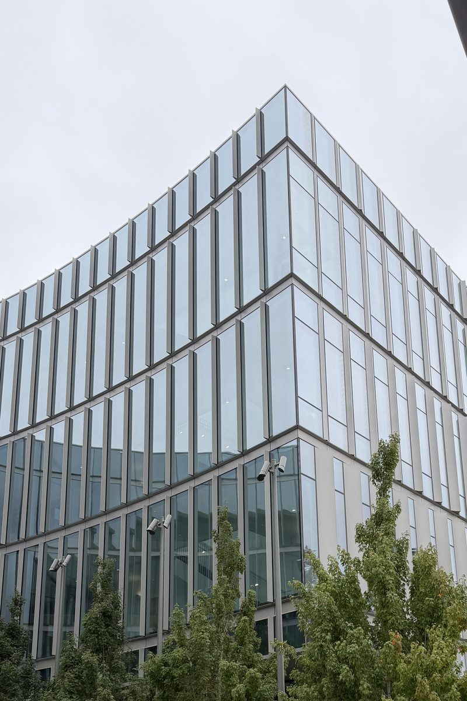
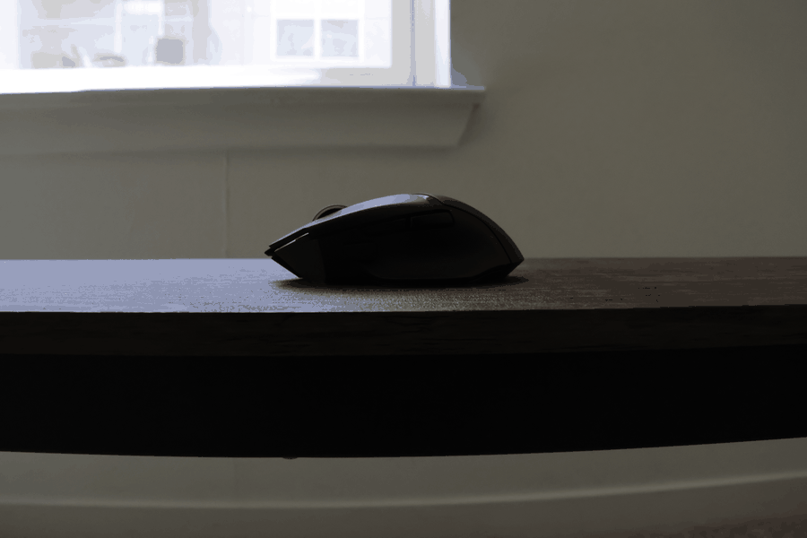

Close Distance
Close-up
Taken from a short distance, causing stronger perspective distortion.
A comparison between a close-up portrait and a portrait taken from farther away with zoom, while keeping the face approximately the same size.
Taken from a short distance, causing stronger perspective distortion.
Taken from farther away, with zoom used to recover similar framing.
The close-up image exaggerates depth differences across the face, making nearby features appear larger. When the camera is farther away, those depth differences become relatively smaller, producing a more natural portrait.
A comparison between a zoomed-in shot taken from farther away and a closer shot with a wider field of view.

Photographed from farther away using a longer focal length.

Photographed closer to the scene using a wider field of view.
When the camera is farther away, relative depth differences in the scene are reduced, so the image appears visually compressed. Moving closer increases perspective effects and makes spatial relationships feel more expanded.
A dolly zoom created by moving the camera backward while zooming in, keeping the subject approximately constant in size.

Zoom changes the framing, while camera translation changes the perspective. By combining the two, the subject can remain roughly stable while the background appears to expand or contract dramatically.